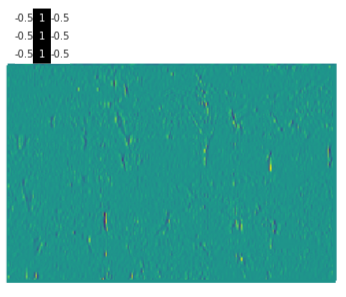

Hands-on Introduction to Deep Learning
OHBM 2020 educational course
Deep Learning for Human Brain Mapping
Ariel Rokem, University of Washington eScience Institute
Follow along at:

Machine learning
Learning from data
Features of the data are extracted/engineered
Training data is used to infer model parameters
Test data is used to evaluate accuracy
Artificial neural networks
A family of machine learning algorithms
Biologically inspired

Minsky and Papert (1969)
A cascade of linear/non-linear operations

Learn by back-propagating the errors
Learn by back-propagating the errors
For the top layer:
How would the error change if we changed the activity in each unit just a little?
For layer L-1
How much would change in each weight affect the activity in layer L?
Depends on:
Stochastic Gradient Descent
Choose a random batch from your training data
Calculate the errors from the top of the network back
Adjust the weights by a small amount
Repeat until convergence


Convolutional networks
Inspired by the visual system
Capitalize on spatial correlations in images




Let's get started!
Contact information

http://arokem.org

arokem@gmail.com

@arokem

github.com/arokem